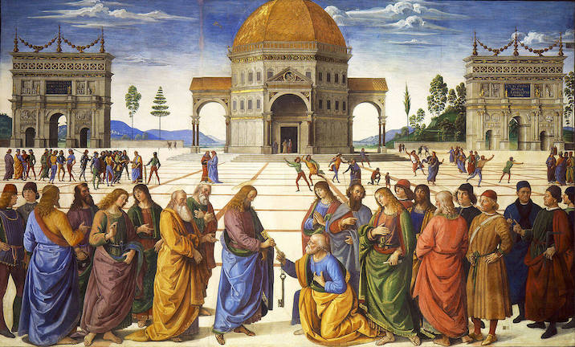

Ways of seeing
-

Albrecht Dürer - Draughtsman Making a Perspective Drawing of a Reclining Woman - ca. 1600
-

Pietro Perugino - The Delivery of the Keys - 1411-1412
-
 1907.jpg)
Henri Matisse - Blue Nude (Souvenir de Biskra) - 1907
-
What techniques and contexts enable these different ways of representing the world?